Home / MLP / Week 12 / Real questions
MLP week 12 - real exam questions
58 questions pulled from past papers whose wording matches this week's topics, newest first, duplicates removed. Pick your answers, then press Check answers. Figures and answer keys are the originals.
Elapsed 00:00
A K-Means algorithm has a cluster centroid: C=(6,6) During the next iteration, a new data point: (10,10) is assigned to this cluster. Before the update step, this cluster contained 4 data points. The individual points are not available, but the centroid of the cluster before adding the new point was: (6,6) After adding the new point and performing the centroid update step, the new centroid becomes: (6.8,6.8) What is the sum of the coordinates of the original 4 data points combined?
Consider the following code:
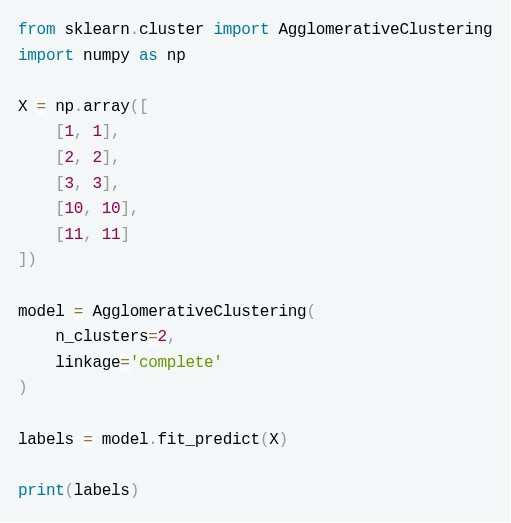
Select the correct statements:- The algorithm starts by selecting two random centroids and iteratively updates them.
- The algorithm initially treats every point as a separate cluster and repeatedly merges clusters based on the complete linkage criterion.
- The final labels represent the two groups formed after cutting the dendrogram to obtain two clusters.
- Changing n_clusters=2 to n_clusters=3 will change the entire merging process from the first step.
- The output labels will always be [0,0,0,1,1] because the first three points are closer to each other.
After training a KMeans clustering algorithm on a dataset we find a data point is sitting exactly on or extremely close to the decision boundary between two neighboring clusters. Which of the following values will the silhouette score be close / equal to?
- 1
- 0
- -1
- infinity
Four data points are given: A=(1,1), B=(2,2), C=(8,8), D=(10,10) A hierarchical agglomerative clustering algorithm using single linkage and Euclidean distance is applied. Initially, each point is considered as an individual cluster. Which two clusters will be merged in the first step?
- A and B
- C and D
- A and D
- B and C
Consider the following implementation of PCA:
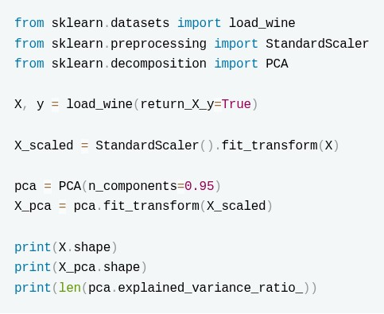
Which of the following are correct?- X_pca.shape[1] is equal to the original number of features.
- The sum of pca.explained_variance_ratio_ is at least 0.95.
- len(pca.explained_variance_ratio_) is equal to X_pca.shape[1].
- The principal components correspond to the original features with the highest variance.
A company uses K-Means clustering to divide its customers into 4 groups based on their purchasing behavior. After training the model, the data science team observes the following: Two different runs of K-Means on the same dataset produce different customer groups. One cluster contains customers that are much farther away from their assigned cluster center compared to other clusters. Which of the following statements are most likely to explain these observations?
- K-Means can converge to different solutions because the initial placement of cluster centroids can affect the final clusters.
- The cluster with customers far from its centroid may indicate that the chosen value of K does not represent the natural grouping structure of the data.
- K-Means guarantees finding the globally optimal clustering solution regardless of initialization.
- K-Means assigns clusters by maximizing the distance between points within the same cluster.
Consider the following code snippet:
 Which of the following statements are true?
Which of the following statements are true?
Which of the following statements are true?- If the model reaches convergence in under 20 iterations, it is guaranteed that every data point is mapped to its nearest centroid.
- The value for number of clusters is a hyperparameter that can be validated using a silhouette score or the elbow method.
- The algorithm will execute a total of 20 independent runs using different starting centroid seed
- The initialization process will select 9 data points entirely at random to serve as the starting centroids.
Performing singular value decomposition on a user-item matrix aims to:
- Increase sparsity
- Reduce dimensionality
- Delete user history
- Improve data imbalance
Which of the following can be used to evaluate the outputs of the KNNClassifier?
- Negative Mean Absolute Error
- Silhoutte Score
- F1 Score
- R2 Score
- Inertia
Which of the following algorithms don't get impacted by feature scaling?
- LinearRegression
- KNN
- KMeans
- DecisionTree
Which of the following statements about Hierarchical Agglomerative Clustering is TRUE?
- It starts with all data points in a single cluster and recursively splits them.
- It requires the number of clusters to be specified before training.
- It repeatedly merges the two closest clusters until a stopping condition is met.
- It updates cluster centroids after each merge.
You are using make_blobs to generate synthetic data for clustering:
 What will the output of the above clustering show?
What will the output of the above clustering show?
What will the output of the above clustering show?- One cluster containing all points.
- It will raise an error since n_samples is not divisible by centers
- Two clusters, but not necessarily equal-sized; distribution of samples per cluster may vary.
- Two clusters with exactly 4 points each.
You are given a dataset where each row represents a customer using two numerical features. You apply K-means clustering with K=3 clusters using the following code:
 What does the variable labels represent after the model is fitted?
What does the variable labels represent after the model is fitted?
What does the variable labels represent after the model is fitted?- The values of the input features used for clustering.
- The cluster index assigned to each data point.
- The total number of clusters formed.
- The coordinates of the cluster centroids.
You are using make_blobs to generate synthetic data for clustering:
What will the output of the above clustering code?
What will the output of the above clustering code?- One cluster containing all points.
- It will raise an error since n_samples is not divisible by centers
- Two clusters, but not necessarily equal-sized; distribution of samples per cluster may vary.
- Two clusters with exactly 4 points each.
Which of the following can be used to evaluate the outputs of the K-Means algorithm?
- Negative Mean Absolute Error
- Silhoutte Score
- F1 Score
- R2 Score
- Inertia
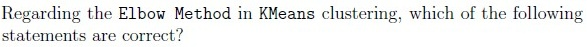
- The elbow method involves plotting the number of clusters against the inertiaand identifying a point where the decrease in inertia slows down.
- The elbow point represents the cluster count beyond which additional clustersdo not significantly improve the model fit.
- The metric used in the elbow method is the silhouette score.
- The elbow point is always the smallest number of clusters in the plot.
- The elbow method may sometimes be inconclusive if no clear bend is visible inthe curve.
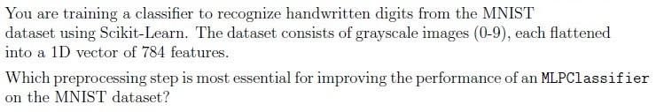
- Convert images to grayscale.
- Scaling the data using Min-Max Scaling
- Apply PCA to reduce feature dimensions.
- One-Hot encode the target labels (digits 0-9)
In top-down (divisive) hierarchical clustering, clusters are recursively split until each data point is its own cluster. The choice of a distance metric plays a crucial role in determining the quality of clustering.
Which of the following distance (similarity) metrics are commonly used in hierarchical clustering?
- Euclidean Distance
- Manhattan Distance
- Jaccard Similarity
- Cosine Distance
In top-down hierarchical clustering, clusters are recursively split until each data point is its own cluster. The choice of a distance metric plays a crucial role in determining the quality of clustering. Which of the following distance (similarity) metrics are commonly used in hierarchical clustering?
- Euclidean Distance
- Tree Distance
- Centroid Distance
- Minkowski Distance

- Performs hierarchical clustering and outputs cluster distances.
- Outputs the silhouette score for the data points.
- Groups data points into 2 clusters and outputs the labels of the clusters foreach data point.
- Reduces the dimensionality of the dataset to 2 dimensions.
Which of the following is NOT a hyperparameter in machine learning?
- Learning rate in gradient descent
- Bias in a linear regression model
- Number of clusters in k-means
- Minimum leaf size in decision trees
What parameters of the k-means clustering algorithm should be tuned to optimize the model performance?


Consider the following options for evaluating the optimal number of clusters in k-means. Which approaches are valid?
- Using an Elbow Curve.
- Computing Silhouette Scores.
- Cross-validation with multiple folds.
- All of these
Which of the following statements are correct about the Silhouette Coefficient?
- It measures how well each sample is clustered.
- A higher score indicates better-defined clusters.
- It requires ground truth labels (target variable) to compute.
- It can be used to evaluate the quality of any clustering algorithm.
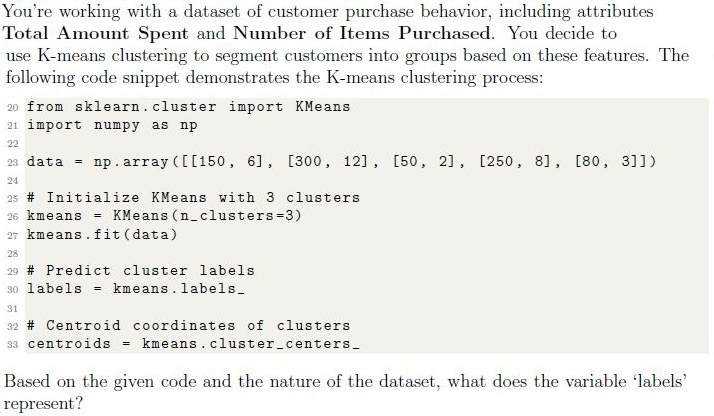
- The total amount spent by each customer.
- The cluster assignments indicating which group each customer belongs to.
- The number of items purchased by each customer.
- The centroid coordinates of the clusters formed.
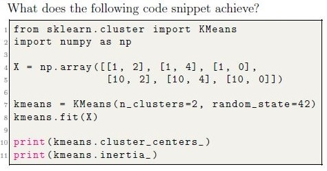
- Outputs the number of iterations and the final silhouette score of the clusters.
- Outputs the cluster labels for each data point and the maximum distancebetween clusters.
- Outputs the coordinates of the cluster centroids and the number of points ineach cluster.
- Outputs the coordinates of the cluster centroids and the sum of squareddistances of samples to their closest cluster center.
Which of the following are techniques for dimensionality reduction?
- PCA (Principal Component Analysis)
- StandardScaler
- Lasso Regression
- t-SNE (t-distributed Stochastic Neighbor Embedding)
How does agglomerative clustering handle outliers?
- It ignores outliers during the clustering process.
- It assigns outliers to the nearest cluster.
- It creates separate clusters for outliers.
- It removes outliers from the dataset before clustering.
What is agglomerative clustering?
- A hierarchical clustering technique that starts with each data point as itscluster and merges the closest clusters iteratively.
- A method for partitioning data into a predefined number of clusters.
- A clustering algorithm that uses centroids to iteratively assign data points toclusters.
- A dimensionality reduction technique that projects data onto a lower-dimensional space.
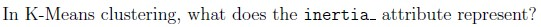
- The distance between cluster centroids
- The number of clusters formed
- The within-cluster sum of squared distances
- The silhouette coefficient
Which of the following are correct for Kmeans clustering algorithm?
- It only finds spherical clusters.
- The output of the algorithms depends upon initial cluster centroids.
- It can automatically detect most appropriate value of k.
- None of these.
Which of the following is true for a hard margin SVM algorithm ?
- It does not create hyperplanes as a decision boundary
- It will correctly classify all the data point if the data is linearly separable
- It is robust to outliers
- It is mostly used for clustering the data
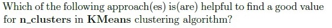
- Plotting the sum of the squared distances of samples to their closest clustercenter
- by Changing the distance metric for KMeans
- By initialising clustering centroids very far from each other
- All of these
What type of classification problem is the Perceptron algorithm best suited for?
- Linearly separable binary classification problems.
- Non-linear classification problems.
- Regression problems.
- Unsupervised Learning Problems
You’re working on a dataset containing customer purchase data, and you want to segment the customers into distinct groups based on their purchasing behavior. Each data point represents a customer and includes features like “Total Amount Spent” and “Number of Items Purchased.” Which algorithm is suitable for this scenario?
- Linear Regression
- Decision Tree
- K-means Clustering
- Support Vector Machine
- None of these
What initialization method is best in KMeans to select initial cluster centroids?
- Random initialization
- K-means++ initialization
- Hierarchical agglomerative initialization
- Weighted initialization

- The distance between cluster centroids
- The number of clusters formed
- Sum of squared distances of samples to their closest cluster center.
- The silhouette coefficient
Which of the following approaches is(are) helpful to find a good value for k in k−means clustering algorithm?
- Plotting an Elbow curve.
- Using classifiers before making clusters.
- Plotting Silhouette coefficient for various values of k.
- Using k-fold cross validation
Which of the following option(s) are correct for the precision-recall curve
- A high area under the curve represents both high recall and high precision.
- The precision-recall curve shows the trade-off between precision and recall fordifferent threshold values.
- The precision-recall curve used to evaluate unsupervised algorithm forimbalanced clustered data.
- None of these
Which of the following is/are Clustering Method.
- Connectivity-based Clustering
- Centroids-based Clustering
- Density-based Clustering
- All of them
You’re working with a large image and want to group similarly coloured segments in the image together. No other information is provided with the image. Which of the following techniques will you use to accomplish the task?
- Supervised learning
- Unsupervised learning
- Reinforcement learning
- None of these
Which of the following are true about multilayer perceptron model in sklearn?
- It is an iterative algorithm/model.
- It can be used to capture non-linear relationships between features and labels.
- It can be used for regression as well as classification.
- It can be used for clustering.
- None of these
Choose the correct statements.
- Hierarchical agglomerative clustering does not need the initial number ofclusters to group the data.
- K-means clustering does not need the number of clusters to group the data.
- K-means clustering can be agglomerative or divisive.
- Hierarchical clustering can be agglomerative or divisive.
- None of these
While performing exploratory data analysis (EDA) on a dataset, you come across some columns with a high percentage of missing values. Along with that, a few categorical columns have a large number of unique categories. Which of the following actions would typically be a recommended initial approach during EDA? (Choose multiple correct options.)
- Visualizing the data distribution of columns to understand their characteristics.
- Using dimensionality reduction techniques, like PCA, to handle columns withmany unique categories.
- Visualizing the distribution of missing values across the dataset to ascertainany patterns or systematic missingness.
- Removing columns that have more than 90% missing values without anycontext.
You’re analyzing a dataset of customer transaction histories. Each transaction includes the purchase amount and timestamp. You want to identify groups of customers based on their spending behavior. Which clustering approach would be most appropriate for this scenario?
- Distribution-based Clustering
- Density-based Clustering
You’re working with a dataset of customer purchase behavior, including attributes “Total Amount Spent” and “Number of Items Purchased.” You decide to use K-means clustering to segment customers into groups based on these features. The following code snippet demonstrates the K-means clustering process:
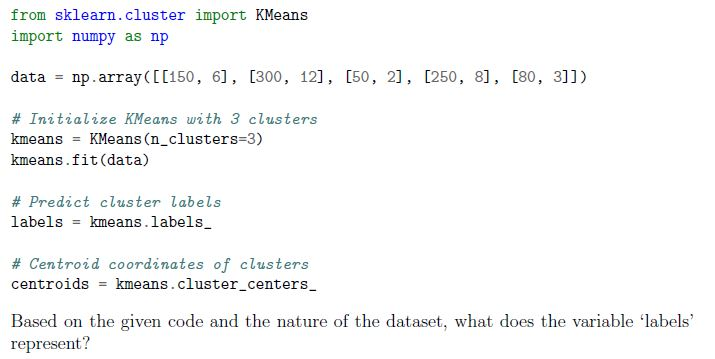
You’re working with a dataset of customer purchase behavior, including attributes “Total Amount Spent” and “Number of Items Purchased.” You decide to use K-means clustering to segment customers into groups based on these features. The following code snippet demonstrates the K-means clustering process:- The total amount spent by each customer.
- The cluster assignments indicating which group each customer belongs to.
- The number of items purchased by each customer.
- The centroid coordinates of the clusters formed.
______________ generates a bunch of normally-distributed clusters of points with specific mean and standard deviations for each cluster.
- sklearn.datasets.make_clusters()
- sklearn.datasets.make_centers()
- sklearn.datasets.make_normal_clusters()
- sklearn.datasets.make_blobs()
Suppose that we have 10000 samples in a dataset. Suppose further we use the K − means algorithm to find clusters in the dataset. Then, the statement that K-Means algorithm always converges with zero inertia (or zero Sums Square Error) for some value of K is
- Always True
- Always False
- True, sometimes
Suppose that we use k-means clustering for a dataset having 100 samples. The initial centroids for k clusters can be initialized in multiple ways. One such as way is shown below
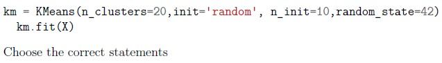
Suppose that we use k-means clustering for a dataset having 100 samples. The initial centroids for k clusters can be initialized in multiple ways. One such as way is shown below- 20 centroids are randomly initialized 10 times
- 10 centroids are randomly initialized 20 times
- 20 samples in the dataset are selected as initialization point such that they areat least 10 units away from each other
- 10 samples in the dataset are selected as initialization point such that they areat least 20 units away from each other
The code given below attempts to find the clusters in the dataset, X using the K-means algorithm.
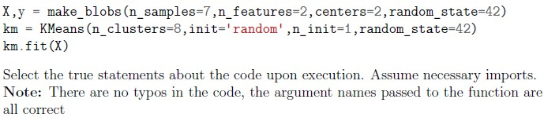
The code given below attempts to find the clusters in the dataset, X using the K-means algorithm.- The code attempts to find 2 clusters in the given dataset
- The dataset X can be visualized in the Euclidean space
- The code raises an error upon execution
- The code gets executed without an error upon execution
Which of the following is/are Correct for K-means algorithm.
- The algorithm is sensitive to outliers.
- It terminates at a local optimum if SSE is used.
- k-means is considered to be a linear algorithm.
- All of these
Hierarchical Clustering can also be called:
- Centroid Based Clustering
- Distribution-based Clustering
- Density-based Clustering
- Connectivity-Based Clustering
Consider following statements regarding a decision tree model? 1. It is a parametric model. 2. It has a tendency to overfit if allowed to grow unconditionally. 3. It can be used for regression, classification and clustering problems. 4. It is one of the easiest machine learning models to interpret. 5. For classification problems, decision tree’s loss function is same as evaluation metric. Choose the option with all the correct statements:
- 2, 3
- 1, 3, 5
- 3, 5
- 2, 4
- 1, 3, 4
- 1, 2, 4
Consider following statements regarding a decision tree model: 1. It is a non-parametric model. 2. It has a tendency to underfit if allowed to grow unconditionally. 3. It can be used for regression and classification problems only, but not for clustering. 4. It is one of the most difficult machine learning models to interpret. 5. For regression problems, decision tree’s loss function and evaluation metric can be same. Choose the option with all the correct statements:
- 1, 3, 5
- 1, 3
- 3, 5
- 2, 4
- 1, 3, 4
- 1, 2, 4
Consider following statements: 1. The K-means algorithm aims to choose centroids that minimise the inertia. 2. The K-Means algorithm requires the number of clusters to be specified Choose the correct option of the following:
- Both statement 1 and 2 are correct.
- Statement 1 is correct but statement 2 is incorrect.
- Statement 1 is incorrect but statement 2 is correct.
- Both statement 1 and 2 are incorrect.
Hierarchical Clustering can also be called as
- Centroid Based Clustering
- Distribution-based Clustering
- Density-based Clustering
- Connectivity-Based Clustering
Which of the following options represent the possible type of machine learning algorithm does the cluster plot shown in Figure 2 demonstrate?
 Which of the following options represent the possible type of machine learning algorithm does the cluster plot shown in Figure 2 demonstrate?
Which of the following options represent the possible type of machine learning algorithm does the cluster plot shown in Figure 2 demonstrate?
Which of the following options represent the possible type of machine learning algorithm does the cluster plot shown in Figure 2 demonstrate? - K-means clustering
- Linear regression
- Logistic regression
- PCA
Which of the following options is correct explained variance score for the following code snippet applying PCA technique.
 Which of the following options is correct explained variance score for the following code snippet applying PCA technique.
Which of the following options is correct explained variance score for the following code snippet applying PCA technique.
Which of the following options is correct explained variance score for the following code snippet applying PCA technique. - [1. 1.]
- [1. 0.]
- [0. 1.]
- [0. 0.]